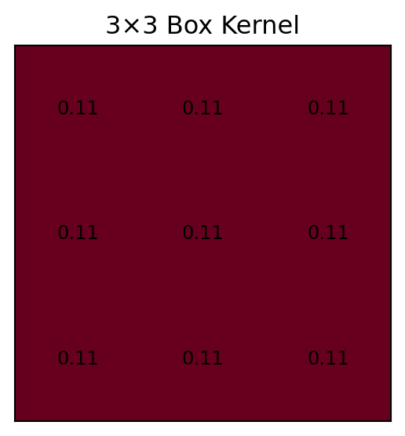
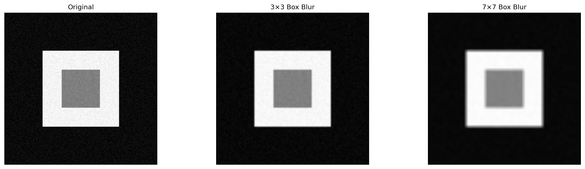
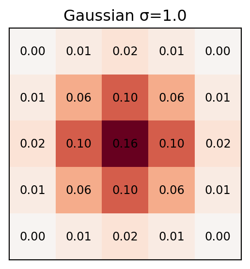
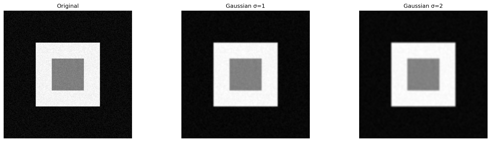
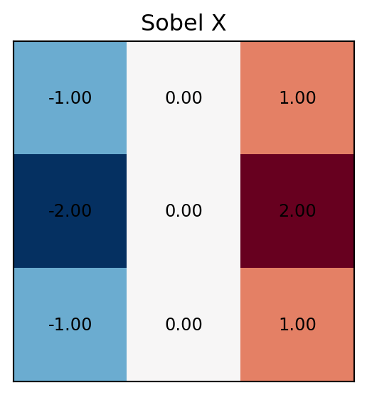
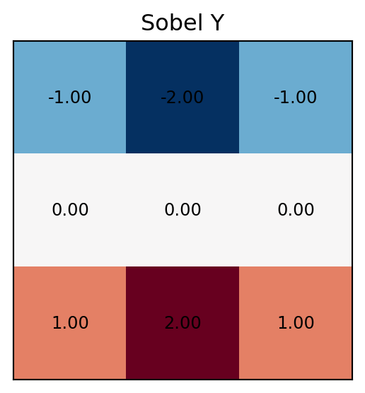
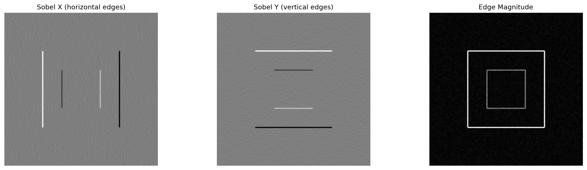
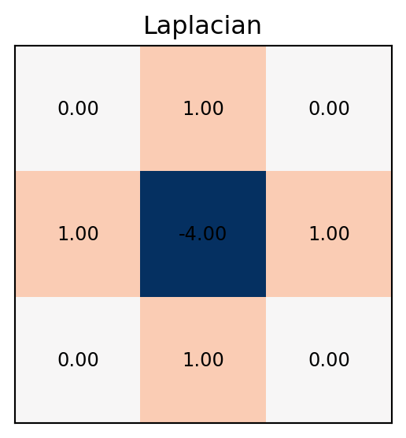
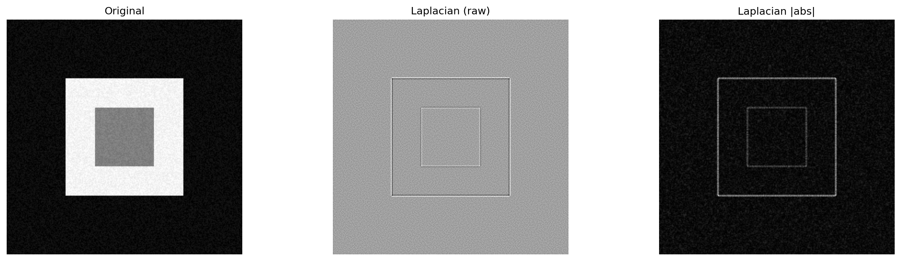

import numpy as np
import matplotlib.pyplot as plt
from matplotlib.colors import Normalize
from PIL import Image
import urllib.request, os
SAMPLE_URL = "https://upload.wikimedia.org/wikipedia/en/7/7d/Lenna_%28test_image%29.png"
SAMPLE_PATH = "lenna.png"
if not os.path.exists(SAMPLE_PATH):
try:
urllib.request.urlretrieve(SAMPLE_URL, SAMPLE_PATH)
except Exception:
# Create a synthetic test image as fallback
np.random.seed(42)
synth = np.zeros((256, 256), dtype=np.uint8)
synth[64:192, 64:192] = 200
synth[96:160, 96:160] = 100
# Add some texture
synth = synth + np.random.randint(0, 20, synth.shape, dtype=np.uint8)
Image.fromarray(synth).save(SAMPLE_PATH)
img_color = np.array(Image.open(SAMPLE_PATH).resize((256, 256)))
if img_color.ndim == 3:
img_gray = np.mean(img_color[:, :, :3], axis=2).astype(np.float64)
else:
img_gray = img_color.astype(np.float64)
def cross_correlate_2d(image, kernel, pad_mode="constant"):
"""
Naive 2D cross-correlation with zero-padding (or other modes).
Parameters
----------
image : 2D numpy array (H x W)
kernel : 2D numpy array (Kh x Kw), both dimensions must be odd
pad_mode : padding mode for np.pad ('constant', 'reflect', 'edge', 'wrap')
Returns
-------
output : 2D numpy array, same shape as image
"""
kh, kw = kernel.shape
ph, pw = kh // 2, kw // 2
# Pad the image
padded = np.pad(image, ((ph, ph), (pw, pw)), mode=pad_mode)
H, W = image.shape
output = np.zeros_like(image, dtype=np.float64)
for i in range(H):
for j in range(W):
patch = padded[i:i + kh, j:j + kw]
output[i, j] = np.sum(patch * kernel)
return output
def show_images(images, titles, cmap="gray", figsize=None):
"""Display a row of images side by side."""
n = len(images)
if figsize is None:
figsize = (5 * n, 4)
fig, axes = plt.subplots(1, n, figsize=figsize)
if n == 1:
axes = [axes]
for ax, im, t in zip(axes, images, titles):
ax.imshow(im, cmap=cmap)
ax.set_title(t, fontsize=11)
ax.axis("off")
plt.tight_layout()
plt.show()
def show_kernel(kernel, title="Kernel"):
"""Visualise a small kernel as an annotated heatmap."""
fig, ax = plt.subplots(figsize=(3, 3))
ax.imshow(kernel, cmap="RdBu_r", norm=Normalize(vmin=-np.max(np.abs(kernel)),
vmax=np.max(np.abs(kernel))))
for i in range(kernel.shape[0]):
for j in range(kernel.shape[1]):
ax.text(j, i, f"{kernel[i, j]:.2f}", ha="center", va="center", fontsize=9)
ax.set_title(title)
ax.set_xticks([]); ax.set_yticks([])
plt.tight_layout()
plt.show()Lab 3: filtering with convolutions
Math recap
Given an image \(I\) and a kernel (filter) \(K\) of size \((2k+1) \times (2k+1)\), the cross-correlation at pixel \((x, y)\) is:
\[ (I \star K)(x, y) = \sum_{i=-k}^{k} \sum_{j=-k}^{k} K(i+k,\; j+k) \;\cdot\; I(x+i,\; y+j) \]
In words: slide the kernel over the image and, at each position, compute the dot product between the kernel and the image patch underneath it.
Convolution is almost the same, but the kernel is flipped (rotated 180°) before the sliding dot product:
\[ (I * K)(x, y) = \sum_{i=-k}^{k} \sum_{j=-k}^{k} K(k-i,\; k-j) \;\cdot\; I(x+i,\; y+j) \]
Equivalently, convolution with \(K\) equals cross-correlation with the flipped kernel \(K'\), where \(K'(i,j) = K(2k-i, 2k-j)\).
NoteWhen does the distinction matter?
For symmetric kernels (Gaussian, box, Laplacian), convolution and cross-correlation produce identical results. The difference only matters for asymmetric kernels. OpenCV’s cv2.filter2D performs cross-correlation, not convolution.
Kernel examples
Below is the list of common kernels for linear filters. A set of helper functions for kernel visualization:
Box (Mean) Filter
The simplest low-pass filter. Every weight is equal, producing a local average.
box_3 = np.ones((3, 3), dtype=np.float64) / 9.0
box_7 = np.ones((7, 7), dtype=np.float64) / 49.0
show_kernel(box_3, "3×3 Box Kernel")
out_box3 = cross_correlate_2d(img_gray, box_3)
out_box7 = cross_correlate_2d(img_gray, box_7)
show_images(
[img_gray, out_box3, out_box7],
["Original", "3×3 Box Blur", "7×7 Box Blur"]
)

Gaussian Filter
A weighted average where closer pixels contribute more, controlled by \(\sigma\):
\[ G(x, y) = \frac{1}{2\pi\sigma^2} \exp\!\Bigl(-\frac{x^2 + y^2}{2\sigma^2}\Bigr) \]
def make_gaussian_kernel(size, sigma):
"""Create a normalised 2D Gaussian kernel."""
k = size // 2
x, y = np.mgrid[-k:k+1, -k:k+1]
g = np.exp(-(x**2 + y**2) / (2 * sigma**2))
return g / g.sum()
gauss_3 = make_gaussian_kernel(5, sigma=1.0)
gauss_5 = make_gaussian_kernel(5, sigma=2.0)
show_kernel(gauss_3, "Gaussian σ=1.0")
out_g1 = cross_correlate_2d(img_gray, gauss_3)
out_g2 = cross_correlate_2d(img_gray, gauss_5)
show_images(
[img_gray, out_g1, out_g2],
["Original", "Gaussian σ=1", "Gaussian σ=2"]
)

Sobel Filters (Edge Detection)
Sobel kernels approximate the first derivative in the horizontal and vertical directions, highlighting edges:
sobel_x = np.array([[-1, 0, 1],
[-2, 0, 2],
[-1, 0, 1]], dtype=np.float64)
sobel_y = np.array([[-1, -2, -1],
[ 0, 0, 0],
[ 1, 2, 1]], dtype=np.float64)
show_kernel(sobel_x, "Sobel X")
show_kernel(sobel_y, "Sobel Y")
edges_x = cross_correlate_2d(img_gray, sobel_x)
edges_y = cross_correlate_2d(img_gray, sobel_y)
edge_mag = np.sqrt(edges_x**2 + edges_y**2)
show_images(
[edges_x, edges_y, edge_mag],
["Sobel X (horizontal edges)", "Sobel Y (vertical edges)", "Edge Magnitude"]
)


Laplacian (Second Derivative)
The Laplacian detects regions of rapid intensity change (edges, corners):
laplacian = np.array([[0, 1, 0],
[1, -4, 1],
[0, 1, 0]], dtype=np.float64)
show_kernel(laplacian, "Laplacian")
out_lap = cross_correlate_2d(img_gray, laplacian)
show_images(
[img_gray, out_lap, np.abs(out_lap)],
["Original", "Laplacian (raw)", "Laplacian |abs|"]
)

Exercises
Exercise 1 — Implement a Custom Edge Detector
Design a \(3 \times 3\) kernel that detects diagonal edges (e.g. running from top-left to bottom-right).
This should be done in NumPy, e.g.:
# YOUR CODE HERE
diagonal_kernel = np.array([
# fill in values
])
img = cv2.filter2D(src=image, ddepth=-1, kernel=diagonal_kernel)
# show imageExercise 2 — Unsharp Masking
Unsharp masking sharpens an image in three steps:
- Blur the image (e.g. with a Gaussian).
- Compute the detail: \(\text{detail} = \text{original} - \text{blurred}\).
- Add scaled detail back: \(\text{sharp} = \text{original} + \alpha \cdot \text{detail}\).
Implement this and experiment with different values of \(\alpha\) (try 0.5, 1.0, 2.0). What happens when \(\alpha\) is very large?
Exercise 3 — Separability Speed Test
- Create a large image (512×512 random noise).
- Time the full 2D Gaussian filter (15×15) vs. the separable version.
- Report the speedup factor.
Hint: Use %%timeit or time.time().
import time
big_img = np.random.rand(512, 512)
gauss_15 = make_gaussian_kernel(15, sigma=3.0)
# Time full 2D
# Time separable
# Report speedupExercise 4 — Build a Laplacian of Gaussian (LoG) Detector
The Laplacian of Gaussian first smooths the image with a Gaussian and then applies the Laplacian. It can also be computed as a single kernel.
- Implement LoG by first applying a Gaussian (\(\sigma = 2\)) and then the Laplacian.
- Create the combined LoG kernel directly from the formula: \[\text{LoG}(x,y) = -\frac{1}{\pi\sigma^4}\left(1 - \frac{x^2+y^2}{2\sigma^2}\right) e^{-\frac{x^2+y^2}{2\sigma^2}}\]
- Compare the two approaches.
def make_log_kernel(size, sigma):
"""Create a Laplacian of Gaussian kernel."""
k = size // 2
x, y = np.mgrid[-k:k+1, -k:k+1].astype(np.float64)
# YOUR CODE HERE
pass